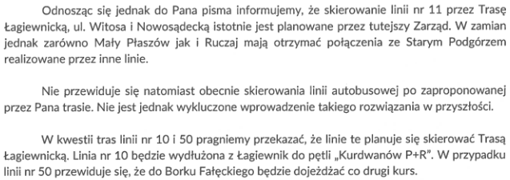
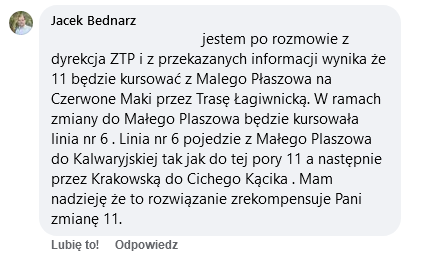
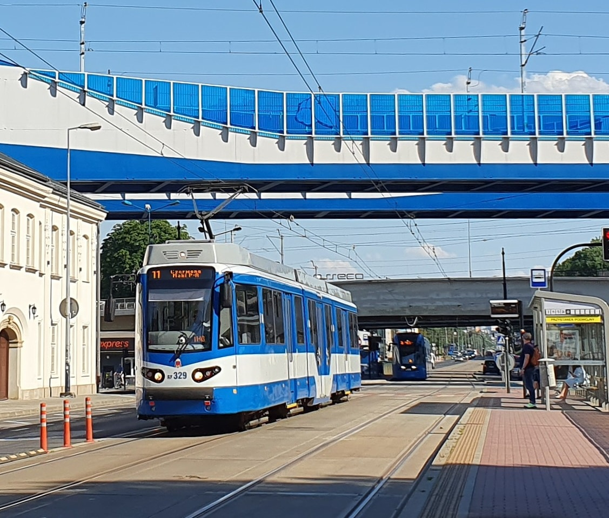

Co knuje ZTP?
Od pewnego czasu jest już wiadome, że otwarcie Trasy Łagiewnickiej nastąpi w wakacje. Z tego powodu na początku maja wysłałem do ZTP e-maila z pytaniem dotyczącym układu linii po oddaniu nowego odcinka. Odpowiedź, którą otrzymałem, niestety mnie przeraziła:
Zarząd Transportu publicznego planuje przekierowanie linii 11 przez Trasę Łagiewnicką, przez co zniknie ona z Podgórza. Dodatkowo, co akurat nie budzi kontrowersji, na Kurdwanów przedłużona zostanie linia 10, a co drugi kurs linii 50 pojedzie do Borku Fałęckiego. Niestety, przynajmniej w najbliższym czasie, całą Trasą Łagiewnicką nie pojedzie również autobus.
Niedługo po powstaniu tej strony, sprawa została nagłośniona między innymi na grupie mieszkańców Płaszowa na Facebooku. Zainteresował się nią także miejski radny Jacek Bednarz, który chcąc odpowiedzieć na pytanie jednej z użytkowniczek, podjął kontakt z ZTP. Niestety informacje stamtąd płynące również nie są optymistyczne:
Oprócz niekorzystnych zmian na jedenastce planowana jest także zmiana trasy linii 6, przez co po prawie 22 latach zniknie ona z ciągu kurdwanowskiego.
Kto na tym straci?
Na proponowanym przez ZTP rozwiązaniu stracą przede wszystkim obecni pasażerowie linii 11 oraz 6. Wprawdzie Zarząd planuje dla nich rekompensaty, jednak wiadomo już, że nie zapewnią one wszystkich ważnych relacji, zapewnianych obecnie. Czerwone Maki są już obecnie na skraju przepustowości - potwierdzono wprawdzie nadanie całotygodniowego statusu linii 17, jednak realnie niewiele to pomoże. W dni powszednie w godzinach szczytu, kiedy pasażerów jest najwięcej, pomiędzy Ruczajem a Podgórzem będzie kursował tramwaj tylko co 15 minut, zamiast co średnio 7,5 minuty, jak to jest obecnie. Przy takim układzie linii długie oczekiwanie na przepełniony tramwaj jest niemal pewne i niestety niewiele będzie można z tym zrobić.
Kolejną stratną grupą są obecni pasażerowie linii 11 z Małego Płaszowa. Nawet po otrzymaniu rekompensaty w postaci szóstki, stracą oni możliwość bezpośredniego dojazdu na Rondo Matecznego oraz na przystanki Smolki i Rzemieślnicza.
Ponadto jest to jawna strata dla pasażerów z większości ciągu kurdwanowskiego, którzy stracą popularne połączenie z przystankiem Korona, czy bezpośredni dojazd na południe centrum. Te relacje niemal na pewno nie zostaną jakkolwiek zrekompensowane, przez co spora grupa pasażerów będzie musiała polegać na uciążliwych przesiadkach.
Nie jest to może bezpośrednio widoczne, jednak na przekierowaniu linii 11 stratni będą również pasażerowie korzystający z prawie całej jej trasy, czyli poruszający się między Płaszowem a Ruczajem. Dlaczego? Obecnie przejazd całą trasą jedenastki zajmuje, w zależności od godziny i kierunku, od 34 do 37 minut. Przez Trasę Łagiewnicką będzie to prawdopodobnie od 36 do 39 minut. Oczywiście te dwie minuty różnicy to niewielka niedogodność względem reszty problemów wynikających z przekierowania jedenastki, jednak doskonale pokazuje to, że na tej zmianie niemal wszyscy są stratni. Niestety Zarząd Transportu Publicznego z niewiadomych powodów próbuje tę zmianę wbrew pasażerom przepchnąć.
Alternatywy
Wiadomo, że przekierowanie linii 11 oraz 6 jest niekorzystne dla ich pasażerów, jednak może ZTP podjął taką decyzję, ponieważ była to jedyna opcja? Nic bardziej mylnego, alternatyw dla proponowanego przez Zarząd układu linii jest naprawdę sporo:
Jedną z opcji jest po prostu zrezygnowanie ze zmian, ponieważ obecny układ linii funkcjonuje bardzo dobrze i nie ma potrzeby go zmieniać. Trasa Łagiewnicka nie wygeneruje ogromnych potoków pasażerskich, więc dwie linie tramwajowe powinny tam w zupełności wystarczyć. Gdyby pojawiły się problemy, w ostateczności na Borek Fałęcki można wysłać wszystkie kursy linii 50, jednak realnie nie ma szans, że mogłaby nastąpić taka potrzeba.
Jeżeli już zmiany na linii 6 są konieczne, jedną z opcji jest pewnego rodzaju jej „odwrócenie” na ciągu kurdwanowskim, czyli skierowanie jej z Małego Płaszowa przez Kabel, Kurdwanów, Trasę Łagiewnicką, Łagiewniki oraz Rondo Matecznego do Korony, skąd już na Salwator lub Cichy Kącik jechałaby ona obecną trasą. Zalety? Mały Płaszów zyskałby trzecią linię, cały ciąg kurdwanowski zachowałby bezpośrednie połączenie z Koroną (zyskując jednocześnie dojazd do Ronda Matecznego), a Trasą Łagiewnicką pojechałaby trzecia linia, co prawdopodobnie jest celem Zarządu Transportu Publicznego. Wadą jest fakt, że szóstka w takim układzie linii zniknęłaby z części ulicy Wielickiej. Na odcinku tym kursuje jednak również częstsza linia 13, która po identycznej trasie jak linia 6 zapewnia stamtąd dojazd aż do przystanku Filharmonia, odkąd szóstka już i tak nie jedzie po stałej trasie i nie zanosi się na to w najbliższym czasie.
Są to tylko moje przykłady, jednak na pewno nie jedyne słuszne propozycje. Z pewnością może istnieć wiele alternatywnych układów linii, w których jedenastka zachowa swoją obecną trasę. Warto pamiętać także, że nowa inwestycja nie jest jedynie torowiskiem.
Autobus
Trasa Łagiewnicka to przede wszystkim inwestycja drogowa, i to na znacznie dłuższym odcinku niż biegnąć ma torowisko tramwajowe. Od strony Kurdwanowa tramwaj dojedzie zaledwie do Zakopiańskiej, podczas gdy drogowa część inwestycji zakończy się aż na połączeniu z Grota-Roweckiego. Warto również pod uwagę wziąć fakt, że wozokilometr autobusu jest około dwukrotnie tańszy od pociągokilometra tramwaju. Wszystko wskazuje więc na to, że z Czerwonych Maków na Trasę Łagiewnicką najlepiej byłoby skierować jakiś autobus, gdzie ponownie opcji jest wiele:
Pierwsza z nich to utworzenie całkiem nowej linii, o trasie z Czerwonych Maków przez Grota-Roweckiego, Trasę Łagiewnicką, Witosa, Nowosądecką i Wielicką. Końcową pętlą byłaby Rżąka lub Nowy Bieżanów Południe, w zależności od zapotrzebowania oraz wolnego miejsca na tych pętlach. Częstotliwość do ustalenia, jednak biorąc pod uwagę koszty myślę, że linia taka mogłaby jeździć nawet częściej niż co 15 minut.
Drugą opcją jest utworzenie podobnej linii, jednak we współpracy z Wieliczką, co zapewniłoby chociażby brak przesiadki wielu pasażerom z aglomeracji, jednak tutaj pojawia się pytanie o finansowanie - Wieliczka może nie być w stanie wyłożyć wystarczającej ilości pieniędzy na utrzymanie dobrej częstotliwości. Ponadto w przypadku autobusu długa linia zwykle oznacza większe opóźnienia, więc propozycja ta oprócz licznych zalet ma niestety także pewne wady.
Kolejny pomysł jest trochę kontrowersyjny, jednak z pewnością najtańszy - jest nim przekierowanie linii 143 od Bieżanowskiej przez Nowosądecką, Witosa, Trasę Łagiewnicką oraz Grota-Roweckiego na Czerwone Maki. Za zaoszczędzone pieniądze można by także podnieść tam częstotliwość, co byłoby w teorii korzystne dla pasażerów ze Złocienia, Starego Bieżanowa oraz Starego Prokocimia, jednak straciliby oni niestety wówczas dojazd na Podgórze SKA, co powoduje konieczność konsultacji tej zmiany z pasażerami i mieszkańcami, na co w ZTP niestety szanse nikłe.
Ponownie nie są to jedyne możliwości, a w przypadku poruszającego się na oponach autobusu, propozycje można wymyślać tak naprawdę w nieskończoność. Wszystkie przedstawione przeze mnie zapewniają jednak jedną ważną zaletę względem przekierowania linii 11 (oczywiście poza niedogodnościami dla jej obecnych pasażerów) - autobus z Czerwonych Maków nie będzie w kierunku Kurdwanowa musiał jechać przez Brożka, przez co powinien być on w tej relacji szybszym środkiem transportu od tramwaju. Ponadto istnienie takiego autobusu znacznie zredukowałoby konieczność przesiadki wśród pasażerów jadących z południa miasta na Ruczaj, a jak wiadomo, połączenie bezpośrednie zawsze jest najbardziej atrakcyjne. Niestety, ale Zarząd Transportu Publicznego nie chce takiego połączenia utworzyć, co niestety zmarnuje sporą część potencjału Trasy Łagiewnickiej.
Co możemy zrobić?
Decyzja niestety już w zasadzie jest podjęta, jednak w przeszłości ZTP potrafił zmieniać swoje decyzje tuż przed wprowadzeniem ich w życie. Póki pierwszy tramwaj linii 11 nie przejechał Trasą Łagiewnicką, a szóstka dalej istnieje na Kurdwanowie, nic jeszcze nie jest stracone. Wejście zmian planowane jest na połowę lipca, do tego czasu można jeszcze walczyć. Co trzeba zrobić, żeby jedenastka oraz linia 6 zostały na swoich obecnych trasach? Przede wszystkim pisać w tej sprawie do ZTP - kulturalnie, z konkretnymi argumentami, może także z propozycją alternatywnego układu linii tramwajowych oraz autobusowych na Trasie Łagiewnickiej. Do tego warto podpisać petycję w celu pokazania Zarządowi konkretnej ilości pasażerów, sprzeciwiających się zmianom. Im będzie nas więcej, tym lepiej, tym większa szansa na cofnięcie tej okropnej propozycji. Linie 11 oraz 6 swoją popularnością w ostatnich latach udowodniły, że mają swoje stałe miejsce w układzie linii komunikacyjnych. Dzięki wspólnemu wysiłkowi utrzymamy je na swoich miejscach, czyli w jedenastkę w Podgórzu, a szóstkę na ciągu kurdwanowskim.
Kontakt
| E-mail do ZTP: | |
| E-mail twórcy inicjatywy: | |
| Petycja w sprawie pozostawienia linii 11 oraz 6 na swoich trasach: | |
| forum.pkk.net.pl - największe krakowskie forum dotyczące komunikacji miejskiej: | |
| Wątek na forum dotyczący układu linii po otwarciu Trasy Łagiewnickiej: | |
| Wątek na forum dotyczący propozycji układu linii po otwarciu Trasy Łagiewnickiej: | |
| Strona inicjatywy na Facebooku: |